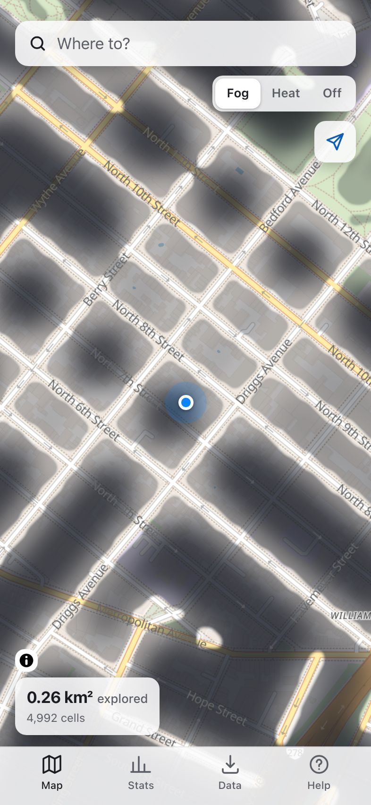
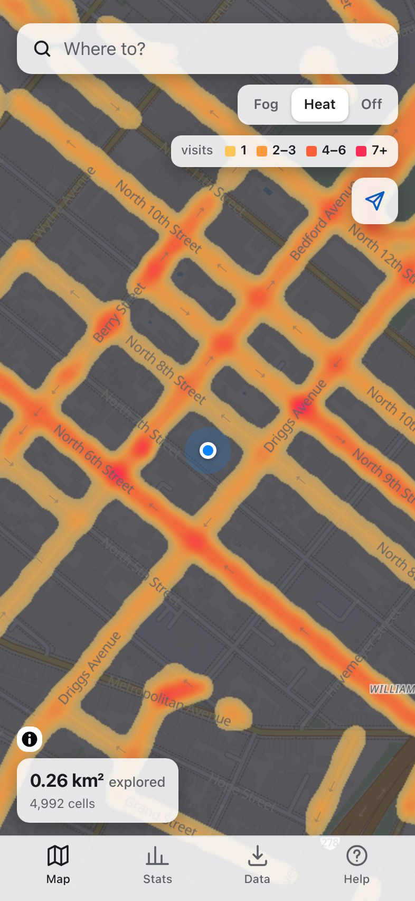
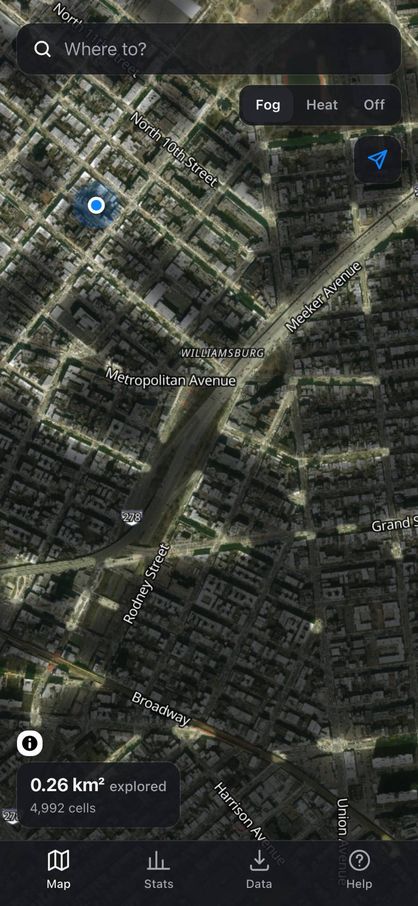
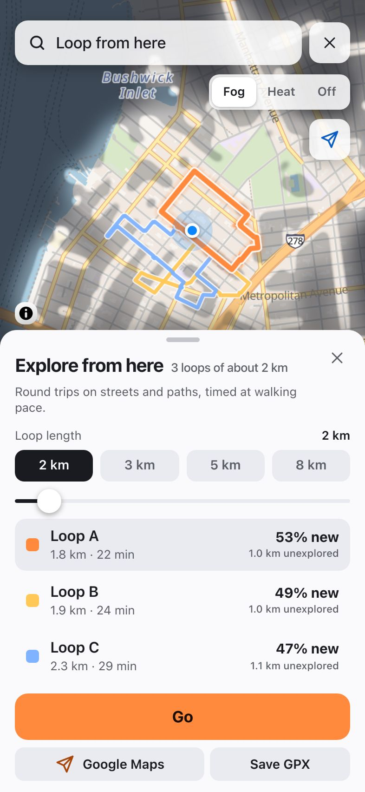
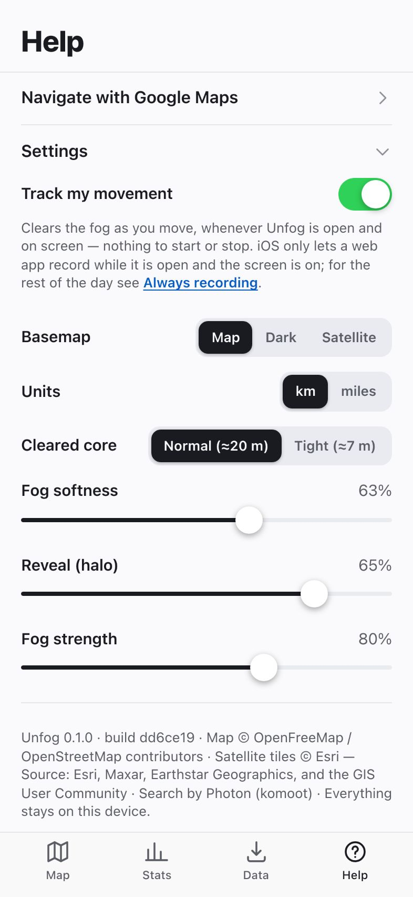
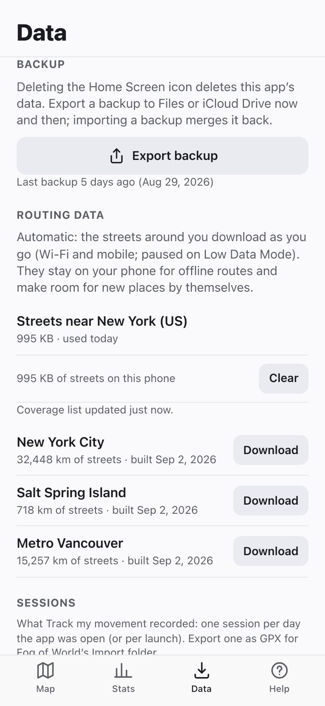
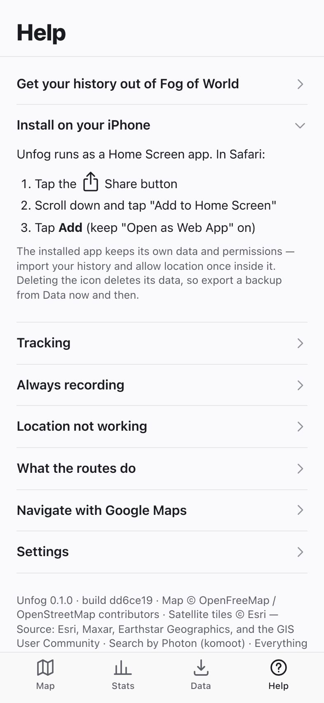

For iPhone · works with Fog of World
Lift the fog. Then go somewhere new.
Unfog imports your Fog of World history and routes you to any destination through as many never-visited streets as your detour budget allows. No destination in mind? Pick a length and get a loop from right where you stand. A Home Screen app, on your phone, with nothing to sign up for.
Free and open source. Works offline once installed.

Four views
Fog, heat, satellite, route.



Screenshots are the real app over sample walks in Williamsburg, Brooklyn, not a mockup.
No destination?
Explore from here.
Pick a length and get up to three loops from where you stand, each one favouring streets you have never walked.
- 2 km
- 3 km
- 5 km
- 8 km
Tap Where to?, then Explore a loop from here. The presets run 2 to 8 km and the slider 1 to 15 km. The loops come back as Loop A, B and C, sorted by unexplored distance; Go follows the one you pick, or hand it to Google Maps from the row under Go.

Track my movement
Clears as you walk.
One switch in Settings, and Unfog clears the fog as you move, whenever it is open and on screen.
Nothing to start or stop. A small Tracking pill on the map is the only sign, the screen stays awake, and each day you have it open is one session you can export as GPX. That is as far as iOS lets a web app go: lock the phone or switch apps and the trail pauses until you are back. Fog of World records in the background, so keep it as your recorder and import its history now and then.

How it works
Fog of World keeps recording. Unfog does the rest.
-
Fog of World stays your recorder
Keep recording there as always. It tracks in the background, which a web app cannot, and Unfog never touches its data. Copy your history out once, then again whenever you want the map caught up. Unfog can track too: flip Track my movement once in Settings and the fog clears as you move, whenever the app is open and on screen.
-
Unfog imports your history
A Sync.zip or a .fwss snapshot, plus GPX from Apple Health or Strava, Google Timeline exports and Unfog backups. Cells line up exactly with Fog of World's own grid, so re-importing never double counts.
-
Routes maximise unexplored streets
Set a detour budget from +10 % to +100 % (default +25 %). Unfog searches the streets for routes that spend the most distance on ones you have never been on: they follow paths where they exist, footpaths and stairs included, and straight lines where they don't, timed at walking pace. The street data takes care of itself: anywhere in North America the streets around you download in the background and stay on the phone for offline routes. Tap Go and follow along on the map, or hand the route to Google Maps for turn-by-turn walking directions: one tap under Go, the route's corners become checkpoints, and a long route opens in parts of nine. No destination in mind? Ask for a loop of 2 to 8 km from where you stand instead.
Step one
Get your history out of Fog of World
Fog of World keeps its data in a Sync folder. Copy it out once, then import the zip in Unfog.
- In Fog of World: Settings → Sync → choose iCloud Drive → Sync Now (wait for it to finish)
- Open the Files app → iCloud Drive → Fog of World
- Long-press the "Sync" folder → Compress. You get Sync.zip
- In Unfog: Data → Import files → pick Sync.zip
If Sync.zip is greyed out in the Files picker, open the Sync folder and select the files inside it instead (several at once is fine). Also works: a .fwss snapshot (Fog of World → Settings → Snapshot), or the Sync folder from Dropbox/OneDrive → Apps → Fog of World. Re-importing is safe: the map lines up exactly and nothing is double counted.
GPX from Apple Health (Health → Profile → Export All Health Data, then workout-routes/*.gpx), Strava, and Google Timeline JSON (Google Maps → Your timeline → Export) import the same way.

Step two
Install it on your Home Screen
Unfog runs as a Home Screen app. Open data-t3labs.github.io/unfog in Safari, then:
- Tap the Share button
- Scroll down and tap "Add to Home Screen"
- Tap Add (keep "Open as Web App" on)
Why the Home Screen matters
The installed app keeps its own data and permissions, so import your history and allow location once inside it. It runs full screen, works offline, and gets storage that iOS does not clear the way it can for a plain Safari tab. Keeping the screen awake while it tracks only works in a Home Screen app.
Deleting the icon deletes its data, so export a backup from Data now and then.

Privacy
Nothing leaves your phone, except map tiles.
No accounts, no analytics, no server of ours. Your history lives in the app's own storage on the phone, and a backup is a zip you export through the share sheet to Files or iCloud Drive.
A few requests do go out, only when needed, and none of them carry your history. The app, its prebuilt regions and its street data download from GitHub Pages, where this site lives.
- Map tiles
- From OpenFreeMap as you pan, or Esri for the satellite view. Tiles you have seen are kept for offline use.
- Place search
- What you type in "Where to?" goes to Photon (komoot) to find the place.
- Street data
- Across North America the streets around you download by themselves from this project's map data, a few megabytes at a time (Wi-Fi or mobile, paused in Low Data Mode). Elsewhere, "Download this area" fetches them from Overpass once. Either way they stay on the phone.
Questions
The honest limits.
Can Unfog record in the background like Fog of World?
No. iOS does not let web apps track location in the background. Turn on Track my movement in Settings and Unfog clears the fog as you move whenever it is open and on screen; it holds a wake lock so the screen stays awake, except in Low Power Mode. Locking the phone or switching apps pauses the trail, and long gaps are not bridged.
Keep Fog of World as your recorder, and fill any gaps with Apple Health or Strava GPX, or a Google Timeline export. An import path for Overland, a free background GPS logger for iOS, is coming.
Where does routing work?
Anywhere in North America, with no download step: the streets around you and along each route arrive by themselves and stay on the phone for offline routes. Data → Routing data shows what is there, and clearing it loses nothing. Prebuilt regions for New York City, Metro Vancouver and Salt Spring Island can be downloaded whole in one tap. Elsewhere in the world, Unfog offers "Download this area" when you plan a route: it fetches the streets from Overpass once, a few kilometres around the route. Where no streets are known yet, a route is a straight line you can still follow.
Do I need a destination?
No. Tap "Where to?", then "Explore a loop from here". Choose 2, 3, 5 or 8 km, or anything from 1 to 15 km on the slider, and Unfog finds up to three round trips from where you stand, listed as Loop A, B and C with their share of unexplored street. Loops use the same routing data as a destination.
Can I get turn-by-turn directions?
Yes, through Google Maps. A web app cannot navigate with the screen off, so every route and loop has a Google Maps button under Go: the route's corners become checkpoints and the Google Maps app takes over with walking directions. Google allows 9 checkpoints per trip, so a long route opens in parts that chain end to start, and Google may take a small shortcut between two checkpoints. Apple Maps gets the destination only; Save GPX hands the route to any other app.
Where do the heat counts come from?
Fog of World only stores visited or not visited for each pixel, with no counts and no dates. Heat counts come from tracks: each GPX track, Google Timeline day or tracked session counts one visit for every cell it touches. A Fog of World import counts as one visit everywhere it has been.
What about backups?
The Home Screen app's data is deleted with its icon. Data → Export backup produces an unfog-backup zip through the share sheet; save it to Files or iCloud Drive. Importing it later merges everything back. Unfog reminds you after 14 days without a backup.
Does Unfog change my Fog of World data?
No. It only reads the files you give it. If you want a tracked session in Fog of World too, export it as GPX from Data → Sessions and drop it in Fog of World's Import folder.
Which files can I import?
Fog of World Sync.zip, the files inside the Sync folder (multi-select; use these if Sync.zip is greyed out in the picker) and .fwss snapshots; GPX from Apple Health (workout-routes/*.gpx in the health export), Strava and other trackers; Google Timeline JSON (the on-device export from Google Maps, or a legacy Takeout Records.json); and Unfog backups. Pick several at once.